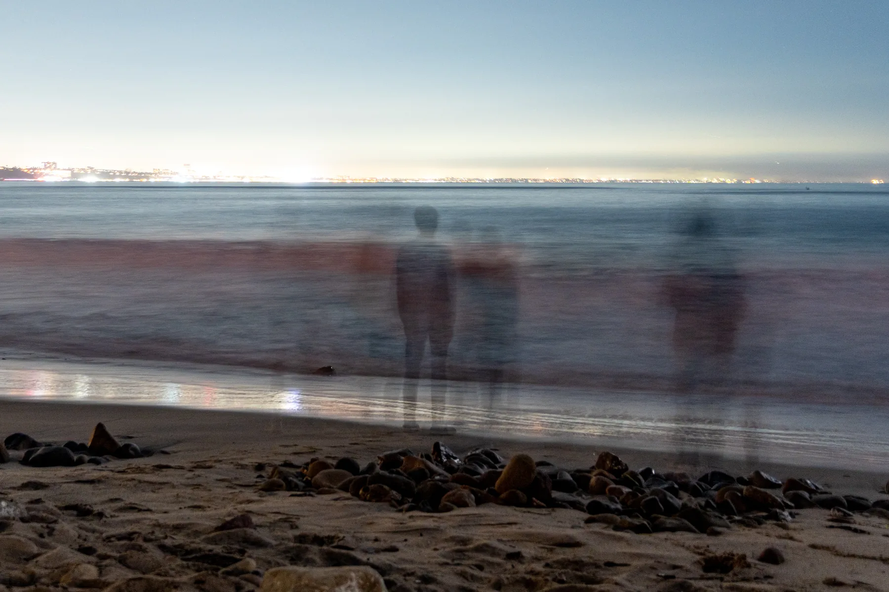

From film to digital
I started photography in a black-and-white film class at Pomona. We worked with pinhole cameras and medium format, and spent time in the darkroom developing prints.

I’ve since moved to digital, mainly using a Ricoh GR III HDF and a Sony Alpha 6700. The film class is where I learned the fundamentals of tonality and working with light.